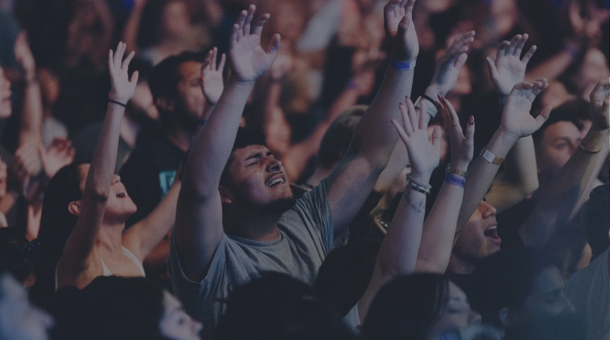
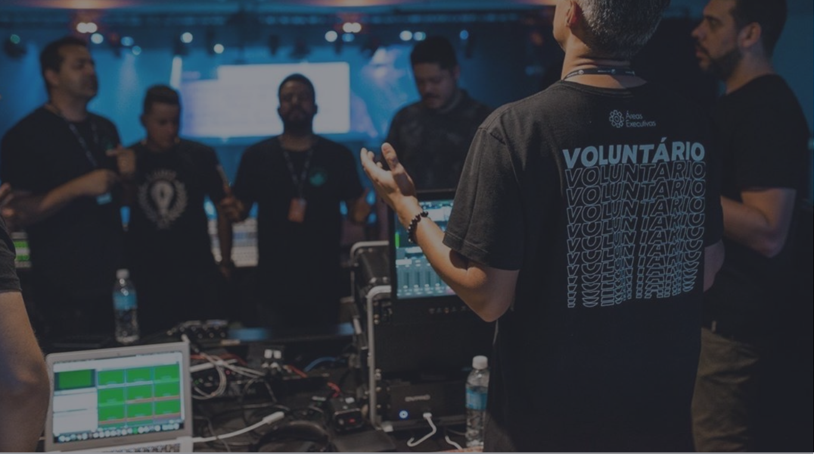

Cultue conosco em uma de

Faça parte de nossa equipe
Faça parte de nossa equipe
de volutários
Nossa assistência social já
ajuda mais de 100 famílias
NOSSAS
REUNIÕES
EQUIPE DE
VOLUNTÁRIOS
ASSISTÊNCIA
SOCIAL